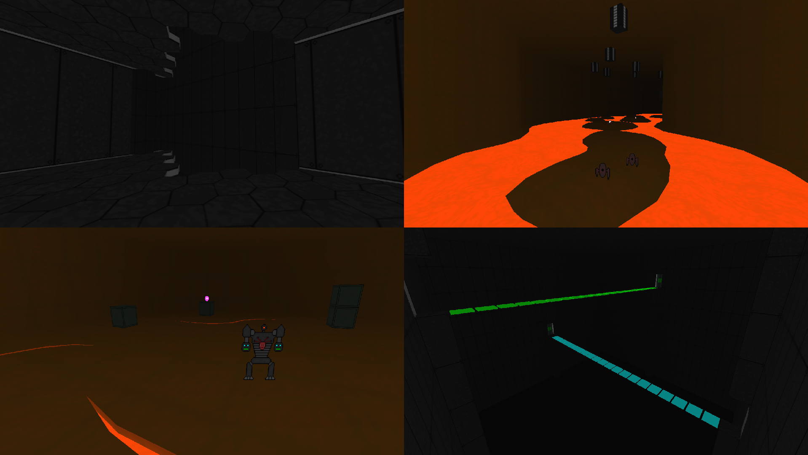

DOWNLOAD LINKS



| Year | 2017 |
| IWAD | Ultimate Doom / Doom II |
| Source port | GZDoom |
| Game mode(s) | Single-player |
| Map(s) | MAP01 |
Deliverance 2600 is my biggest DOOM project yet. It’s a (supposedly) Metroidvania-inspired total conversion powered by GZDoom. Almost everything in the mod from the mapping to the graphics and music was made by me, with only a little help from elsewhere.
The mod takes place on a research facility on the planet Ferrus XII. You play as Stanford T. Pace, a former prison inmate who trades freedom for participation in what’s called Project Deliverance. He’s sent in to the research facility to investigate a communications breakdown. But as can be expected, things don’t go too well, and the next thing he knows, he’s shooting plasma balls into the faces of alien invaders.
Usage of GZDoom-specific features is prominent here: dynamic lights, 3D floors, ACS scripts etc. are all present and accounted for. The gameplay, while not particularly Metroidvania-esque in hindsight, puts emphasis on exploration and non-linear progression. It also includes wave-based battle sequences, bosses and even a platforming section or two.